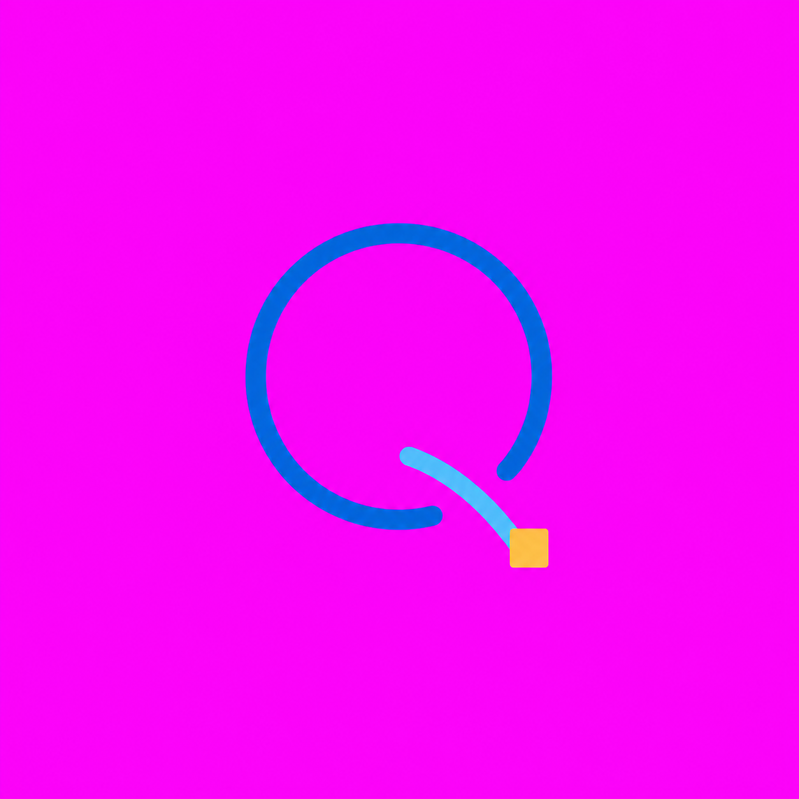
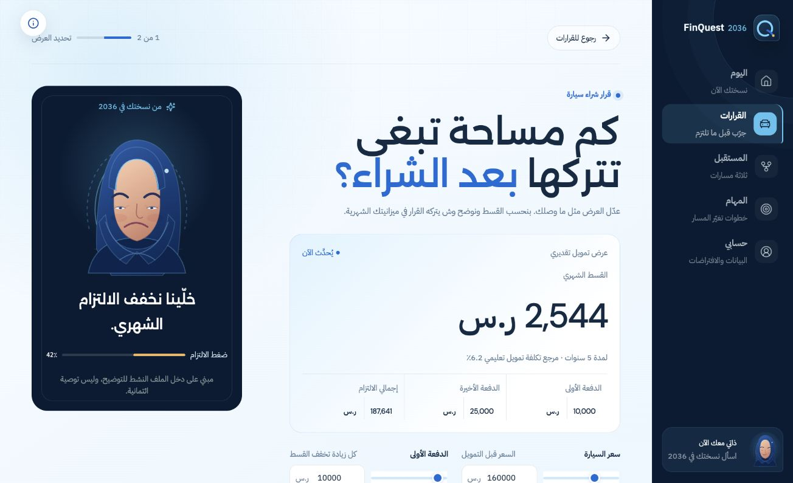
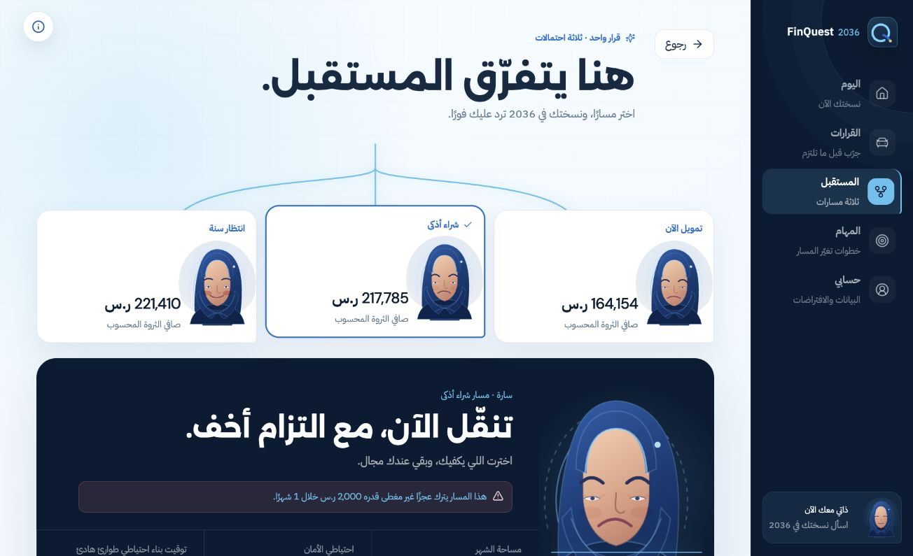
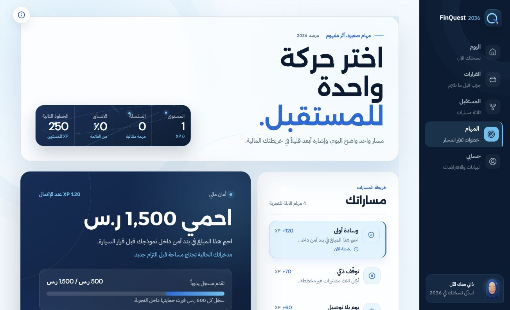

جرّب القرار قبل ما تلتزم،
وقابل النسخة اللي راح تعيش أثره.
محاكاة مالية تعليمية عربية تحوّل قرار السيارة إلى ثلاثة مستقبلات محسوبة، وشرح مفهوم، ومهمة صغيرة قابلة للتنفيذ.

قرار السيارة لا يغيّر بند النقل فقط؛ يضغط السيولة، يؤخر الأهداف، ويخلق تكلفة فرصة لا تظهر في شاشة القسط.
في 2024 استحوذ النقل على 14.3% من إنفاق الاستهلاك النهائي للأسر في السوق المحلي السعودي.
المصدر: الهيئة العامة للإحصاء، الحسابات القومية السنوية 2024.
ما الذي يبقى بعد القسط والمصاريف والدفعة الأخيرة؟
هل يبقى هامش يحمي المستخدم عند أول مفاجأة؟
كم شهرًا أو سنة يؤخر القرار الهدف الذي يهمه؟
نحوّل الالتزام الكبير من رقم جامد إلى رحلة شخصية قابلة للمقارنة والفهم والتجربة.
دخل، ادخار، التزامات، مصاريف وهدف شخصي.
السعر، الدفعة الأولى، المدة والدفعة الأخيرة.
ثلاثة مسارات محسوبة واختبارات حساسية اختيارية.
شرح عربي قصير مبني على أرقام جاهزة.
تقدم، XP، شارات وأثر محاكى واضح.
الالتزام الشهري الفعلي في المثال: القسط + احتياطي الدفعة الأخيرة.
الافتراضات ظاهرة وقابلة للفهم. لا ندّعي سعرًا حيًا أو موافقة ائتمانية.


صافي الثروة المحسوب في 2036
تنقّل الآن مع التزام أخف
أفضل مساحة في هذا النموذج
الفارق بين أعلى وأدنى مسار في مثال سارة.
نتائج توضيحية من الملف الاصطناعي النشط وافتراضات النموذج؛ سيناريوهات وليست توقعات أو ضمانات.
ملف مالي + عرض سيارة + افتراضات تعليمية معلنة.
تمويل، تضخم، نمو دخل، ادخار، استثمار، سيولة وهدف.
مساحة الشهر، صندوق الطوارئ، توقيت الهدف وصافي الثروة.
AI اختياري + فحص الأرقام + بديل محلي دائم.
شهرًا في كل مسار
مسارات مستقبلية
أرقام ينشئها نموذج اللغة
مصدر حقيقي للحسابات
ليست روبوت نصائح عامة؛ إنها طبقة تفسير مرتبطة بالمسار المختار وبحقائق محددة.
«في مسار شراء أذكى، الالتزام الشهري المحسوب 1,457 ر.س، وتبقى مساحة شهرية -207 ر.س.»
الحسابات حتمية · شرح AI اختياري · ليست نصيحة مالية

حلقة كاملة: اختر ← ابدأ ← سجّل ← أكمل ← شاهد الأثر.
التقدم حاليًا محلي ومعلّم ذاتيًا. التحقق البنكي ميزة مستقبلية بموافقة صريحة.
اختبارًا ناجحًا
ملفات اختبار
التحقق الحالي: TypeScript، lint، الاختبارات وبناء الإنتاج — كلها ناجحة.
اختبارات بشرية مكتملة، بيانات بنكية حقيقية، أو شراكة مصرفية رسمية.
تجربة قرار مع ذات مستقبلية بدل حاسبة أو محتوى مالي تقليدي.
محرك حتمي، API محمية، fallback، حالة محلية واختبارات.
ثلاثة مسارات، خط زمني، سيولة، هدف، تكلفة فرصة وحساسية.
عربي أولًا، RTL، رحلة قصيرة، لغة محلية ونتيجة قابلة للفهم.
طبقة تعليم قبل التمويل، ثم تكامل بموافقة وضوابط المصرف.
تجربة تعليمية تساعد العميل يفهم البدائل والتبعات باستخدام جداول معتمدة من المصرف مستقبلًا.
هل وصل المستخدم إلى قرار واعٍ؟
هل يفرق بين القسط والالتزام الفعلي؟
هل تحوّل الفهم إلى خطوة؟
هدفنا: صفر تناقض رقمي ظاهر.
مسار التكامل مقترح للمستقبل؛ لا ندّعي شراكة أو منتجًا مصرفيًا حاليًا.
لا نقرر عن المستخدم. نجعل نتيجة قراره مفهومة، شخصية، وقابلة للتحويل إلى خطوة.
ديمو حي · 90 ثانية